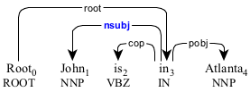
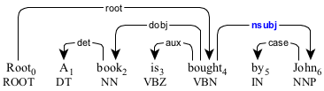
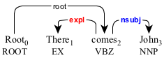

nsubj : nominal subject
A nominal subject (nsubj) modifies the verbal predicate.
For an active construction, it is in the subject position.

The nominal subject "John and Mary" in the active construction.
The nominal subject "They" in the active construction.
For a passive construction, the nominal subject is in the object position.

The nominal subject "them" in the passive construction.
The nominal subject "them" in the reduced passive construction.
The nominal subject in an open clausal complement (xcomp), a small clausal complement (scomp), and an adverbial clause (advcl) is represented by the secondary dependency.

The nominal subject "I" in the open clausal complement "to study" and the adverbial clause "to teach".
The nominal subject "I" in the open clausal complement "to study" and the adverbial clause "to teach".

The nominal subject "John" in the small clausal complement "John smart".
The nominal subject "John" in the small clausal complement "John smart".
When an expletive (expl) is used, the nominal in the object position is considered the nominal subject.

The nominal subject "John" with the existential "there".
The nominal subject "John" with the existential "there".